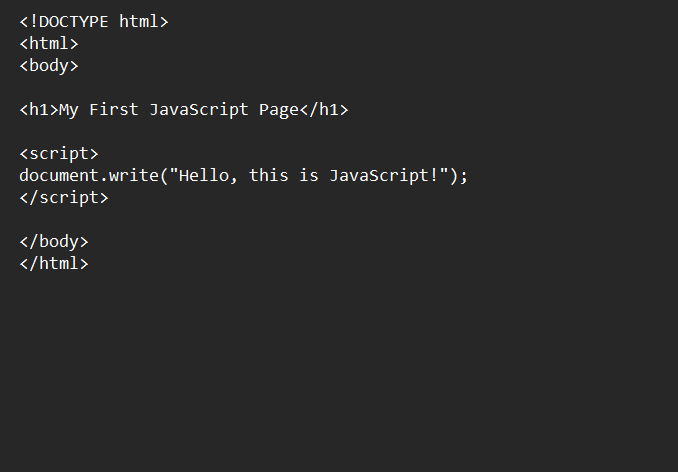
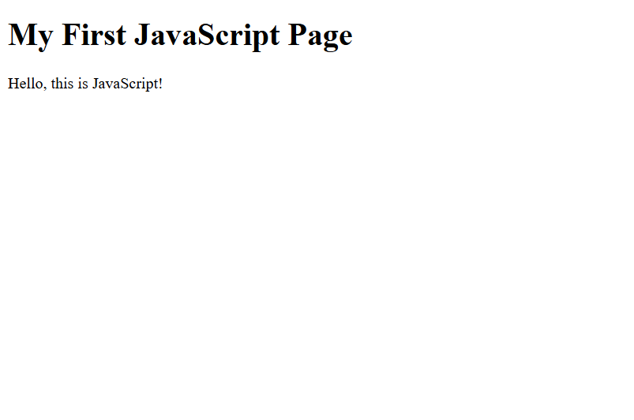

Browser Output and Reflection on Lesson 1
Reflection: In this lesson, I learned that JavaScript is a popular scripting language used to make websites interactive and dynamic. It allows webpages to respond to user actions such as mouse clicks and form inputs. I also learned that JavaScript can validate data, create cookies, and improve the functionality of websites. This lesson helped me understand how websites like social media platforms and video sites become interactive through JavaScript.
Here is my browser output for this lesson!

